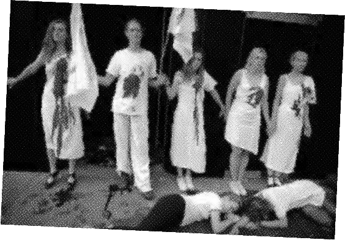

패스트패션fast fashion 또는 스파(SPA, Speciality retailer of Private label Apparel) 또는 제조소매업은 패스트푸드처럼 빨리 음식이 나와 먹을 수 있듯이 최신 유행을 채용하면서 저가 의류를 짧은 주기로 세계적으로 대량 생산, 판매하는 패션 상표와 그 업종을 말한다. 대표적인 상표로는 갭, 자라, H&M, 이랜드 등이 있고, 이들 업종을 의류 소매업apparel retail이라고도 한다. 하지만 이러한 패션은 의류를 버리는 일이 많기 때문에 환경 문제로 관련되어 비판을 받고 있기도 하다.
"지속가능성을 향한 진전은 실제로 1/3정도로 감소하고 있다. 브랜드가 성장과 환경발자국 사이의 절충을 아직 해결하지 못하고 있다. 2030년까지 연간 1억 2천만 톤의 의류 생산이 예상됨에 따라, 지속가능성 노력은 세계 자원에 더 많은 부담이 가해지고 있는 것을 피하기 위해 가속화될 필요가 있다."
이 보고서에 따르면 브랜드가 성장과 환경발자국 관리 사이의 절충을 아직 해결하지 못하고 있다고 경고했다.
프랑스 대통령 에마뉘엘 마크롱 지도 아래 32개 패션업체가 업계의 지속가능성을 위한 '패션 협약'을 체결했다. 패션시장에서 가장 큰 명품 브랜드인 샤넬, 랄프로렌, 프라다 뿐만 아니라 H&M 그룹과 자라를 포함한 "패스트 패션" 생산자들이 포함되었다. 패스트 패션 소매상들은 매년 약 30만 톤의 옷이 영국 쓰레기 매립지에 버려지는 시장을 조성하여 환경 운동가들로부터 비난을 받아왔다.
Extinction Rebellion은 매년 85%의 의류가 결국 쓰레기 매립지로 모인다는 유엔 수치를 언급하며 과잉 생산 중단과 생태계 위기 타계를 위한 변호를 촉구하고 있다. Extinction Rebellion은 패션 시스템은 노후화, 착취, 과잉 생산을 사반으로 하고 있으며 이것은 지구, 인류, 동물에 영향을 미친다고 주장한다.
패션쇼장 앞에서 가짜 피를 뿌리고 마치 죽은 것처럼 드러눕는 시위 모습을 연출하였다. '죽은 행성에 패션은 없다'라는 팻말을 들고 런던 패션 위크 사망을 선언하는 장례식을 보여주었다.
영국 패션 위원회에 보낸 편지에 "우리가 직면한 실존적 위협을 인정 받아 영국 패션 위원회가 지금 세계가 필요로 하는 리더가 되어 런던 패션 위크를 취소해줄 것을 요청한다."
매주 영국 쓰레기 매립지에 버려지는 1100만개 의류에 항의하기 위해 모델 Stella Tennant와 자선단체 Oxfam은 영국인들이 구매한 5000만 개 이상의 일회용 의류에 반대하는 Second Hand September 캠페인을 진행했다. Stella Tennant와 Oxfam은 그들의 캠페인을 위해 소비자들에게 30일동안 새 옷을 사는 것을 자제하고 Oxfam에서 구매하여 프로그램을 위한 기금을 모금할 것을 요청하고 있다.
"We have years of talk but now change is at the forefront. The negative impact of the fashion industry has reached its nadir and now consumers are beginning to ask the right questions."
우리는 수년간의 대화를 가지고 있지만 이제 변화는 선두에 서 있다. 패션 산업의 부정적인 영향이 극에 달했고 이제 소비자들은 올바른 질문을 하기 시작했다.